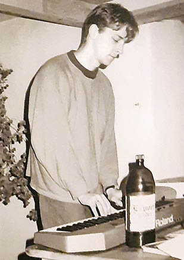
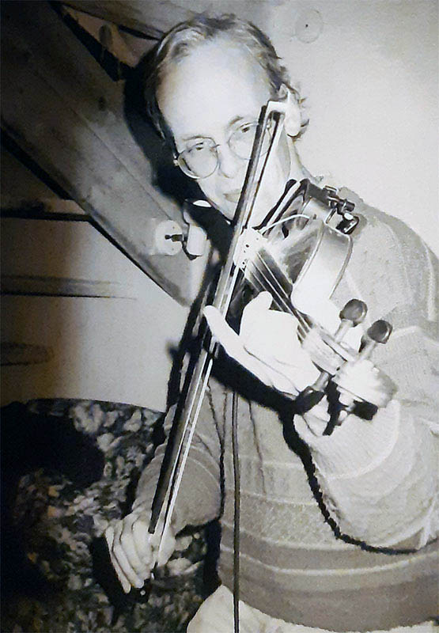
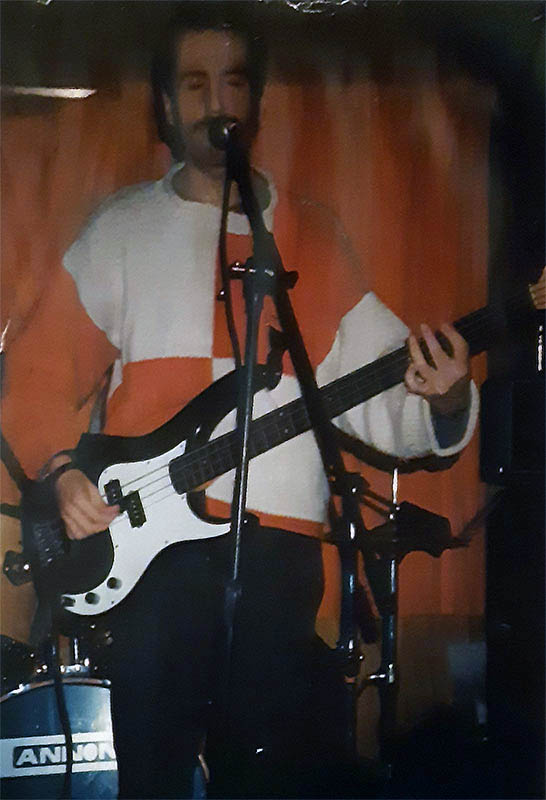
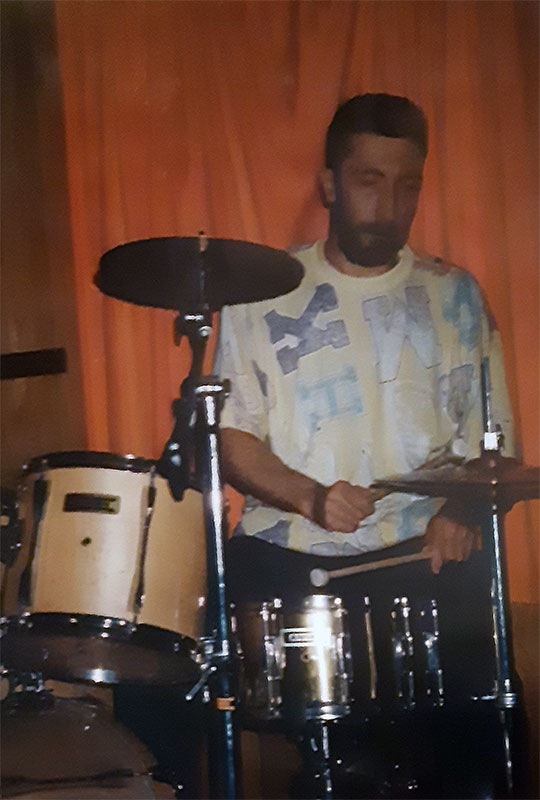
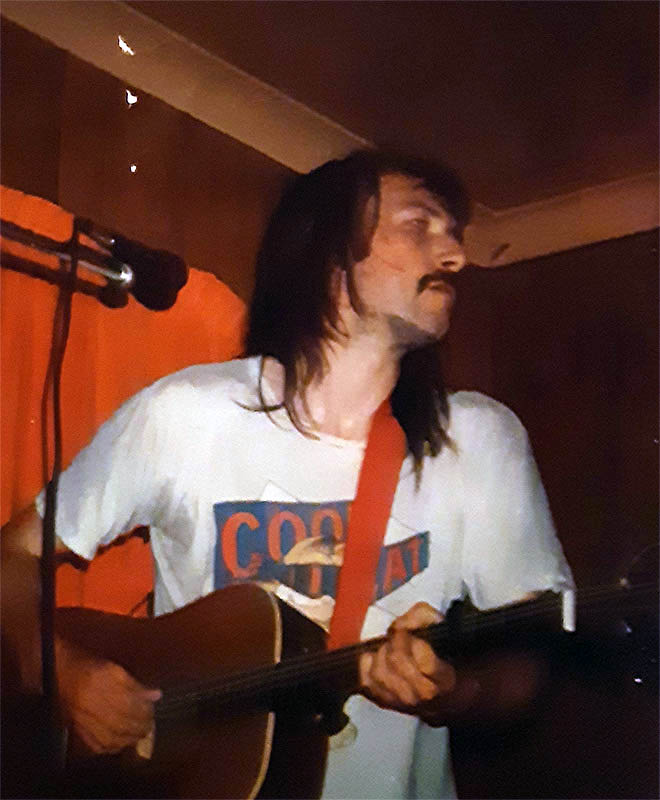
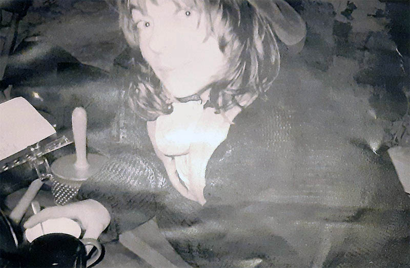
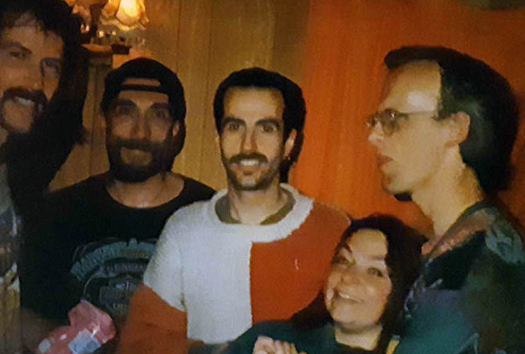
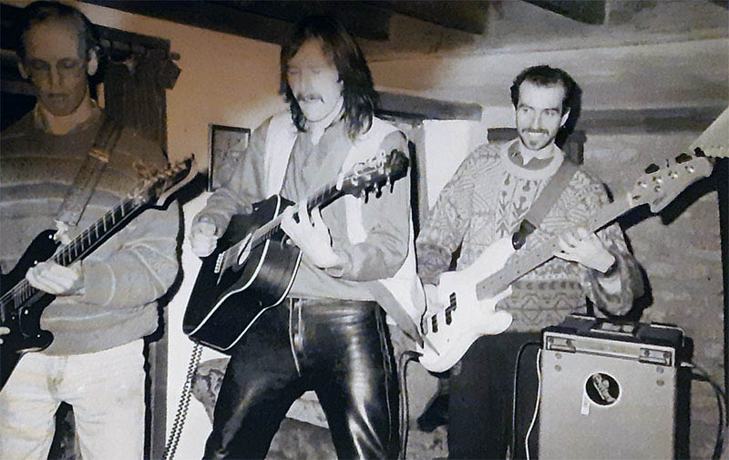

<!DOCTYPE html>
<html lang="en"></html>
<head>
  <meta charset="UTF-8">
  <meta http-equiv="X-UA-Compatible" content="IE=edge">
  <meta name="viewport" content="width=device-width, initial-scale=1.0">
  <link rel="preconnect" href="https://fonts.googleapis.com">
  <link rel="preconnect" href="https://fonts.gstatic.com" crossorigin>
  <link href="https://fonts.googleapis.com/css2?family=DM+Mono&amp;family=DM+Sans&amp;display=swap" rel="stylesheet">
  <link rel="stylesheet" href="css/main.css">
  <title>The Adders</title>
</head>
<nav id="nav">
  <ul>
    <li><a href="index.html">TAKE ME HOME</a></li>
    <li><a href="snitw.html">something nasty</a></li>
    <li><a href="bedouin.html">bedouin</a></li>
    <li><a href="jackroller.html">jackroller</a></li>
    <li><a href="idle.html">idle lovers</a></li>
    <li><a href="lost.html">lost hombres</a></li>
    <li><a href="petrol.html">petrol moon    </a></li>
    <li><a href="starkadders.html">starkadders</a></li>
    <li><a href="adders.html">adders</a></li>
  </ul>
</nav>
<div id="circle-container">
  <div id="circle">
    <button id="close">X</button>
    <button id="open"></button>
  </div>
</div>
<div id="main">
  <div class="content">
    <h1>something nasty in the woodshed    </h1>
    <div class="photos"></div>
    <!--/ blurb-->
    <div class="blurb">
      <p>The story of this band started around 1992, with Rog Hunt (guitar) and Julie Matthews (vocals and flute) meeting at Exeter teacher training college, music being a big driver for both!</p>
      <p>Rog mainly knew 70s/80s rock and post punk (with a bit of Dylan and Nick Cave thrown in). He had hardly sung and was still dismayed at not being able to ape the rock guitar of Hendrix or Heavy Metal heroes!</p>
      <p>Julie, having run the folk club at Swansea Uni, had worked her way on from a Moody Blues affair to many new fields, becoming heavily skilled in English and Irish folk songs - both vocally and on the flute. This, strangely enough, was a good mix and had potential…</p>
      <p>After Rog realised that he could write a reasonable bit of strange chord guitar shenanigans to a Julie's lyrics, adn that he was better at that than teaching,  a change was made, both geographically and otherwise: the pair of them hacked up to East Devon from Brixham after Rog leaving teaching for the good of all, with a Jawa & side-car.</p>
      <p>With Julie still teaching, they started to attend a few (of what were in the days before ‘open mic sessions’) Folk Nights. They began roughly performing Irish, Welsh and English folk songs learned from a couple of Julie's books. </p>
      <p>OMG!...but it was a good breeding ground. Things had to tighten up whilst playing live together to a bunch of strangers with nasal drone critique skills. They didn't often join in with our random choices! </p>
      <p>So, from this with Folk song covers not quite completing the circle, it seemed something else was looking for a way in – original songs were gestating, and were not going to be overdue for long!</p>
      <p>Some early sessions featured a few self-penned numbers with Matthew Smith (briefly on bass and recording), Ian Richardson (on keys for a short while) and Nick Martin playing fiddle and electric guitar.</p>
      <p>This got us the attention of a local recording studio in Honiton: Daylight Music, run by Ian Dent,who recorded our first 3 track session and put a song called <i>The Mirror</i> (lyrics/tune by Julie and rest by Rog) on a compilation of 24 Devon Bands, with the risqué coastal-rock title <i>Long and Pink</i>!</p>
      <!--end blurb-->
    </div>
  </div>
  <div class="toonz">
    <h2>toonz</h2>
    <div class="song s1">
      <audio src="mp3s/1-snitw1/01-Man in the Long Coat.mp3"></audio>
      <button> </button><span>Man in the Long Coat</span>
    </div>
    <div class="song s2">
      <audio src="mp3s/1-snitw1/02-Black Crow.mp3"></audio>
      <button> </button><span>Black Crow</span>
    </div>
    <div class="song s3">
      <audio src="mp3s/1-snitw1/03-The Mirror.mp3"></audio>
      <button> </button><span>The Mirror</span>
    </div>
    <div class="song s4">
      <audio src="mp3s/1-snitw1/04-England Boys.mp3"></audio>
      <button> </button><span>England Boys</span>
    </div>
    <div class="song s5">
      <audio src="mp3s/1-snitw1/05-Fat Controller.mp3"></audio>
      <button> </button><span>Fat Controller</span>
    </div>
    <div class="song s6">
      <audio src="mp3s/1-snitw1/06-Digging My Crown.mp3"></audio>
      <button> </button><span>Digging My Crown</span>
    </div>
    <div class="song s7">
      <audio src="mp3s/1-snitw1/07-A Love Like This.mp3"></audio>
      <button></button><span>A Love Like This</span>
    </div>
    <div class="song s8">
      <audio src="mp3s/1-snitw1/08-Lone Rider.mp3"></audio>
      <button> </button><span>Lone Rider</span>
    </div>
    <div class="spacer">&nbsp;</div>
    <div class="song s9">
      <audio src="mp3s/2-snitw2/01-Way Down.mp3"></audio>
      <button></button><span>Way Down</span>
    </div>
    <div class="song s10">
      <audio src="mp3s/2-snitw2/02-Only One Hour.mp3"></audio>
      <button> </button><span>Only One Hour</span>
    </div>
    <div class="song s11">
      <audio src="mp3s/2-snitw2/03-Killer Windscreen.mp3"></audio>
      <button> </button><span>Killer Windscreen</span>
    </div>
    <div class="song s12">
      <audio src="mp3s/2-snitw2/04-Alone.mp3"></audio>
      <button> </button><span>Alone</span>
    </div>
    <div class="song s13">
      <audio src="mp3s/2-snitw2/05-The Promising.mp3"></audio>
      <button> </button><span>The Promising</span>
    </div>
    <div class="song s14">
      <audio src="mp3s/2-snitw2/06-Fisherman.mp3"></audio>
      <button> </button><span>Fisherman</span>
    </div>
    <div class="song s15">
      <audio src="mp3s/2-snitw2/07-King Rides Out.mp3"></audio>
      <button> </button><span>King Rides Out</span>
    </div>
    <div class="song s16">
      <audio src="mp3s/2-snitw2/08-Victim.mp3"></audio>
      <button> </button><span>Victim</span>
    </div>
    <div class="song s17">
      <audio src="mp3s/2-snitw2/09-Susan.mp3"></audio>
      <button> </button><span>Susan</span>
    </div>
    <div class="song s18">
      <audio src="mp3s/2-snitw2/10-Simply Go.mp3"></audio>
      <button> </button><span>Simply Go</span>
    </div>
    <div class="song s19">
      <audio src="mp3s/2-snitw2/11-Neighbourhood Watch.mp3"></audio>
      <button> </button><span>Neighbourhood Watch</span>
    </div>
    <div class="song s20">
      <audio src="mp3s/2-snitw2/12-Way I Wanted.mp3"></audio>
      <button> </button><span>Way I Wanted</span>
    </div>
    <div class="song s21">
      <audio src="mp3s/2-snitw2/13-Dont Believe.mp3"></audio>
      <button> </button><span>Don't Believe</span>
    </div>
    <div class="song s22">
      <audio src="mp3s/2-snitw2/14-Tom O Bedlam.mp3"></audio>
      <button> </button><span>Tom O' Bedlam</span>
    </div>
  </div>
  <div id="modal">
    <div id="caption"></div>
  </div>
  <script src="js/scripts.prod.js"></script>
</div>